library(ggplot2)
library(tibble)
library(zeallot)
library(COTAN)
options(parallelly.fork.enable = TRUE)
outDir <- "Data/MouseCortexFromLoom/"
setLoggingLevel(1)
setLoggingFile(file.path(outDir, "ForebrainDorsal_E150-analysis.log"))Forebrain Dorsal E15.0 Data-set Anaysis
Cleaning
Read the already created COTAN object
fb150Obj <- readRDS("Data/MouseCortexFromLoom/SourceData/e15.0_ForebrainDorsal.cotan.RDS")
sampleCondition <- getMetadataElement(fb150Obj, datasetTags()[["cond"]])
sampleCondition[1] "e15.0_ForebrainDorsal"Inspect cells’ sizes
cellSizePlot(fb150Obj, splitPattern = ":", numCol = 1)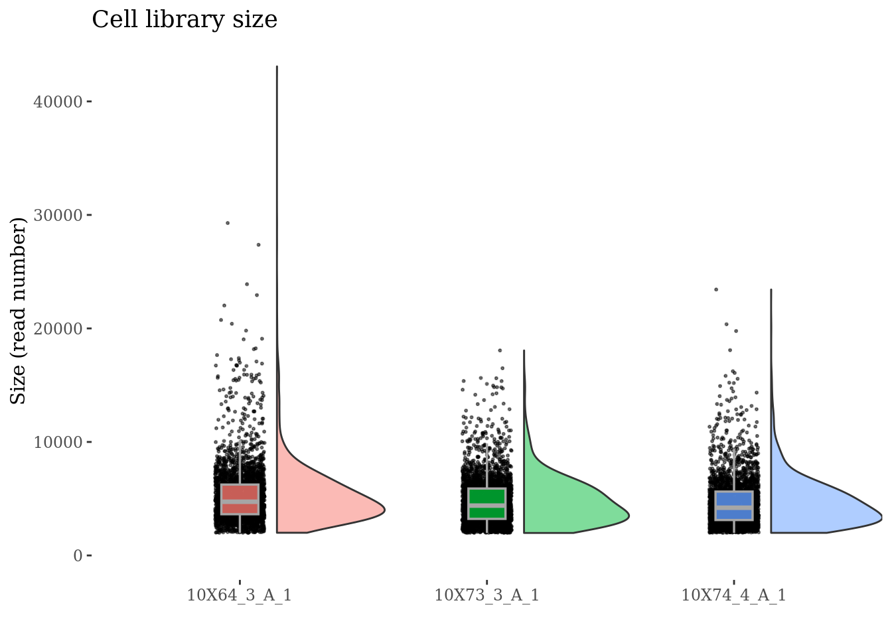
Drop cells with too many ritz reads as they are probably duplets
cellsSizeThr <- 10000
fb150Obj <- addElementToMetaDataset(fb150Obj, "Cells size threshold", cellsSizeThr)
cells_to_rem <- getCells(fb150Obj)[getCellsSize(fb150Obj) > cellsSizeThr]
fb150Obj <- dropGenesCells(fb150Obj, cells = cells_to_rem)
cellSizePlot(fb150Obj, splitPattern = ":", numCol = 1)Inspect the number of expressed genes per cell
genesSizePlot(fb150Obj, splitPattern = ":", numCol = 1)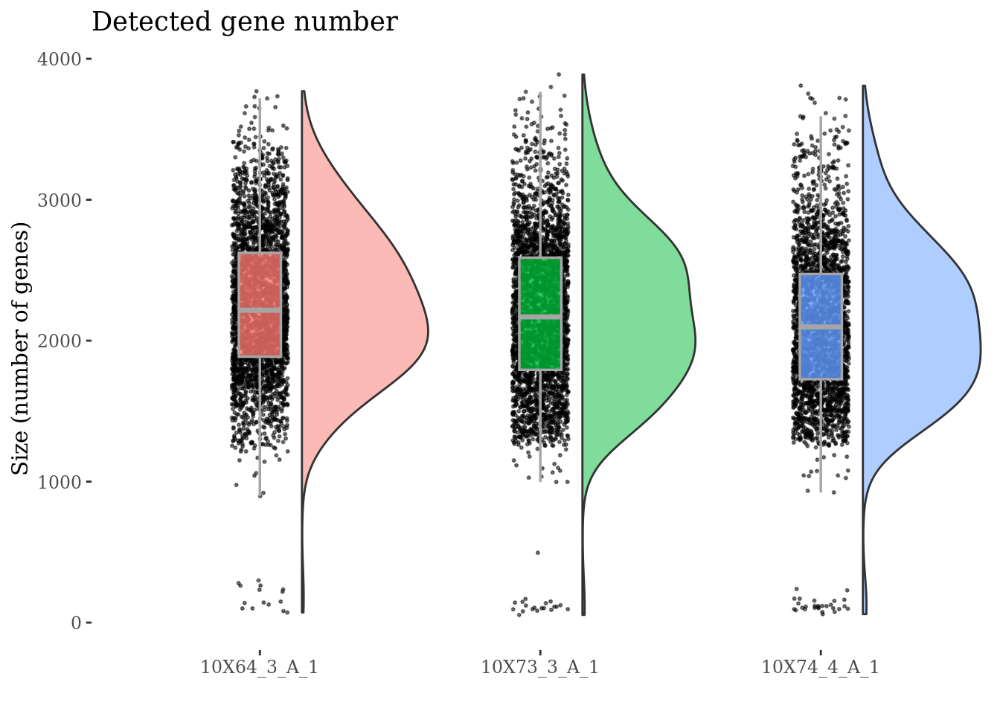
Drop cells with too low genes expession as they are probably dead
genesSizeLowThr <- 700
fb150Obj <- addElementToMetaDataset(fb150Obj, "Num genes low threshold", genesSizeLowThr)
numExprGenes <- getNumExpressedGenes(fb150Obj)
cells_to_rem <- names(numExprGenes)[numExprGenes < genesSizeLowThr]
fb150Obj <- dropGenesCells(fb150Obj, cells = cells_to_rem)
genesSizePlot(fb150Obj, splitPattern = ":", numCol = 1)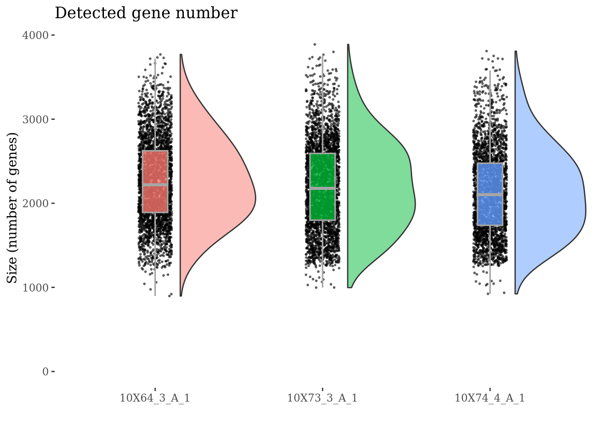
Check number of mitocondrial genes expressed in each cell
mitGenesPattern <- "^mt."
getGenes(fb150Obj)[grep(mitGenesPattern, getGenes(fb150Obj))][1] "mt.Co1" "mt.Nd4" "mt.Nd5" "mt.Nd1" "mt.Nd2" "mt.Atp6"c(mitPlot, mitSizes) %<-%
mitochondrialPercentagePlot(fb150Obj, genePrefix = mitGenesPattern,
splitPattern = ":", numCol = 1)
plot(mitPlot)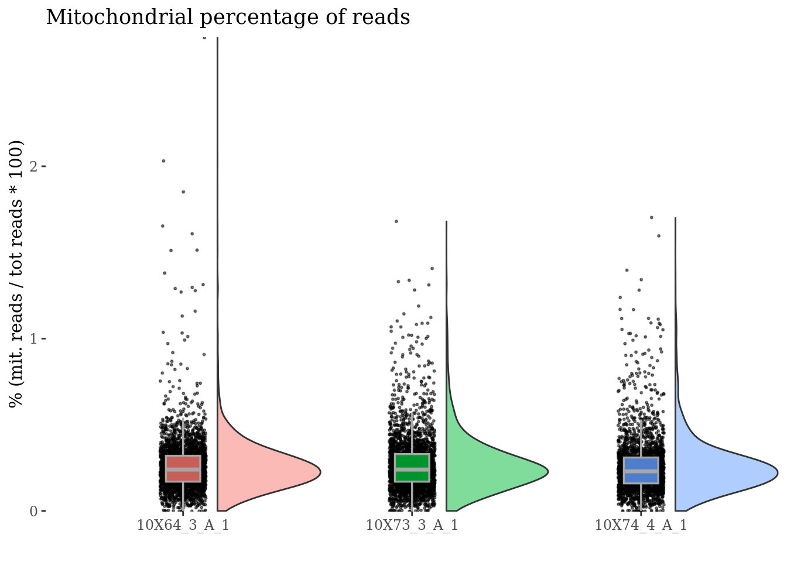
Cells with a too high percentage of mitocondrial genes are likely dead (or at the last problematic) cells. So we drop them!
mitPercThr <- 1.0
fb150Obj <- addElementToMetaDataset(fb150Obj, "Mitoc. perc. threshold", mitPercThr)
cells_to_rem <- rownames(mitSizes)[mitSizes[["mit.percentage"]] > mitPercThr]
fb150Obj <- dropGenesCells(fb150Obj, cells = cells_to_rem)
c(mitPlot, mitSizes) %<-%
mitochondrialPercentagePlot(fb150Obj, genePrefix = mitGenesPattern,
splitPattern = ":", numCol = 1)
plot(mitPlot)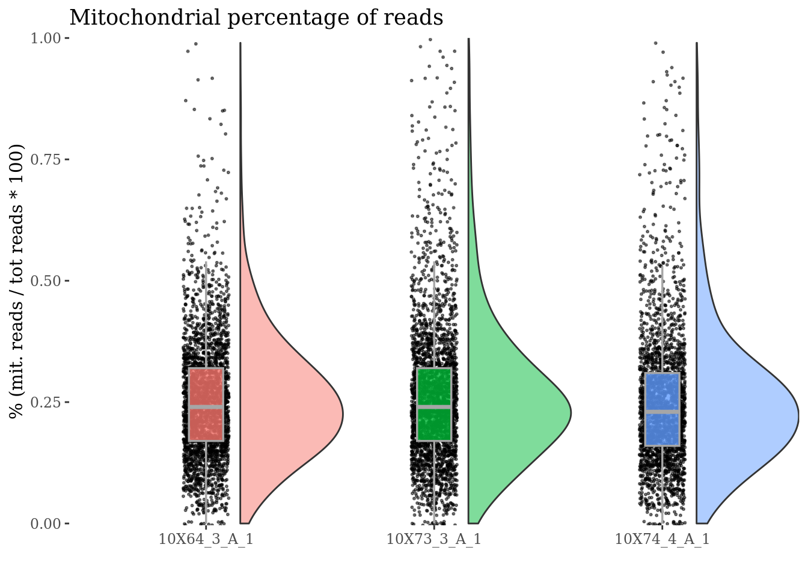
Check no further outliers after all the culling
cellSizePlot(fb150Obj, splitPattern = ":", numCol = 1)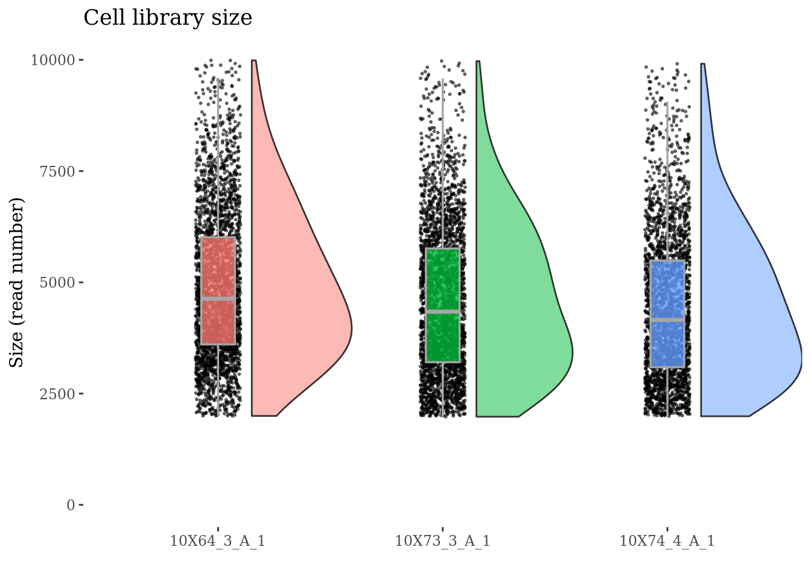
genesSizePlot(fb150Obj, splitPattern = ":", numCol = 1)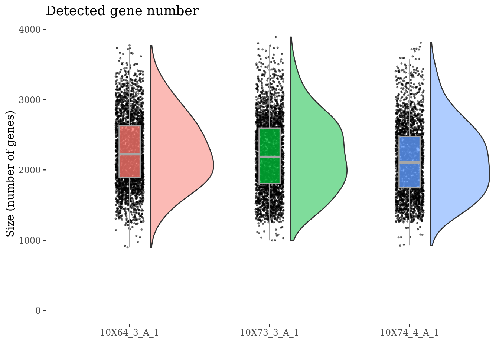
Clean: round 1
fb150Obj <- clean(fb150Obj)
c(pcaCellsPlot, pcaCellsData, genesPlot, UDEPlot, nuPlot, zoomedNuPlot) %<-% cleanPlots(fb150Obj)
plot(pcaCellsPlot)
plot(genesPlot)
fb150Obj <- addElementToMetaDataset(fb150Obj, "Num drop B group", 0)B group contains highly diverse cells: drop them!
cells_to_rem <- rownames(pcaCellsData)[pcaCellsData[["groups"]] == "B"]
fb150Obj <- dropGenesCells(fb150Obj, cells = cells_to_rem)Clean: round 2
fb150Obj <- clean(fb150Obj)
c(pcaCellsPlot, pcaCellsData, genesPlot,
UDEPlot, nuPlot, zoomedNuPlot) %<-% cleanPlots(fb150Obj)
plot(pcaCellsPlot)
plot(genesPlot)
fb150Obj <- addElementToMetaDataset(fb150Obj, "Num drop B group", 1)B group contains one cell with high diversity in the higher components
plot(pcaCellsData)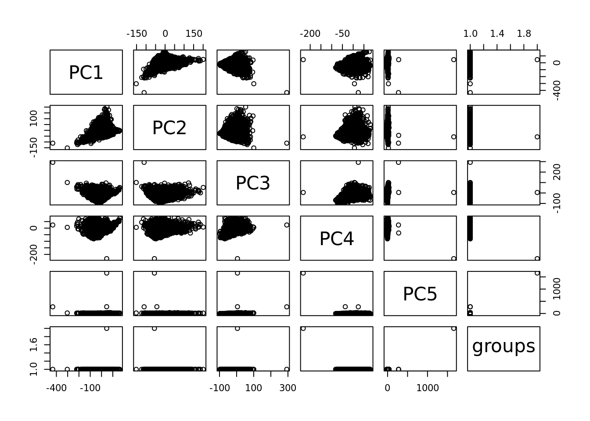
cells_to_rem <- rownames(pcaCellsData)[pcaCellsData[["groups"]] == "B"]
fb150Obj <- dropGenesCells(fb150Obj, cells = cells_to_rem)Clean: round 3
fb150Obj <- clean(fb150Obj)
c(pcaCellsPlot, pcaCellsData, genesPlot,
UDEPlot, nuPlot, zoomedNuPlot) %<-% cleanPlots(fb150Obj)
plot(pcaCellsPlot)
plot(genesPlot)
fb150Obj <- addElementToMetaDataset(fb150Obj, "Num drop B group", 2)B group contains one cell with high diversity in the higher components
plot(pcaCellsData)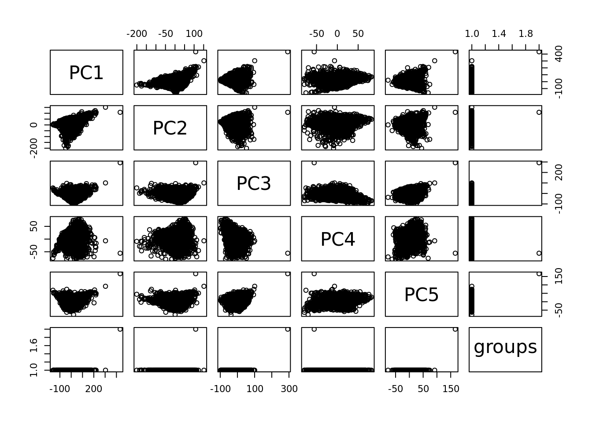
cells_to_rem <- rownames(pcaCellsData)[pcaCellsData[["groups"]] == "B"]
fb150Obj <- dropGenesCells(fb150Obj, cells = cells_to_rem)Clean: round 4
fb150Obj <- clean(fb150Obj)
c(pcaCellsPlot, pcaCellsData, genesPlot,
UDEPlot, nuPlot, zoomedNuPlot) %<-% cleanPlots(fb150Obj)
plot(pcaCellsPlot)
plot(genesPlot)
fb150Obj <- addElementToMetaDataset(fb150Obj, "Num drop B group", 3)B group contains few cell with high diversity
plot(pcaCellsData)
cells_to_rem <- rownames(pcaCellsData)[pcaCellsData[["groups"]] == "B"]
fb150Obj <- dropGenesCells(fb150Obj, cells = cells_to_rem)Clean: round 5
fb150Obj <- clean(fb150Obj)
c(pcaCellsPlot, pcaCellsData, genesPlot,
UDEPlot, nuPlot, zoomedNuPlot) %<-% cleanPlots(fb150Obj)
plot(pcaCellsPlot)
plot(genesPlot)
fb150Obj <- addElementToMetaDataset(fb150Obj, "Num drop B group", 4)Visualize if all is ok:
plot(UDEPlot)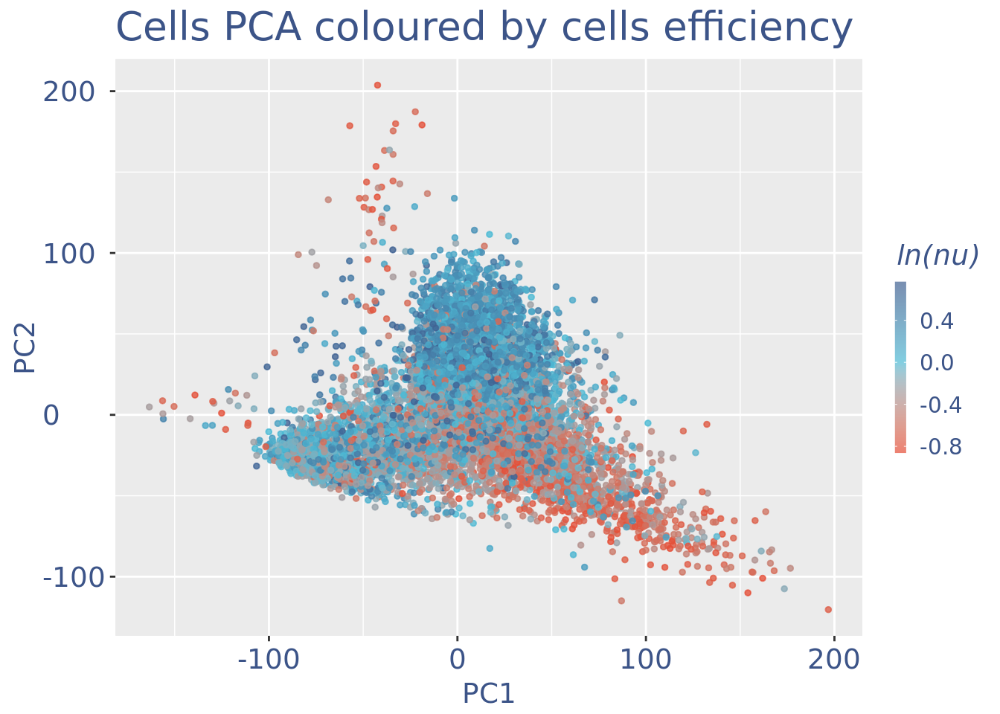
plot(nuPlot)
lowUDEThr <- 0.4 # the threshold to remove low UDE cells
nuDf <- data.frame("nu" = sort(getNu(fb150Obj)), "n" = seq_along(getNu(fb150Obj)))
UDEPlot_zoomed <- ggplot(nuDf, aes(x = n, y = nu)) +
geom_point(colour = "#8491B4B2", size = 1.0) +
xlim(0L, 400L) +
ylim(0.0, 1.0) +
geom_hline(yintercept = lowUDEThr, linetype = "dashed",
color = "darkred") +
annotate(geom = "text", x = 200L, y = 0.25,
label = paste0("to remove cells with nu < ", lowUDEThr),
color = "darkred", size = 4.5)
plot(UDEPlot_zoomed)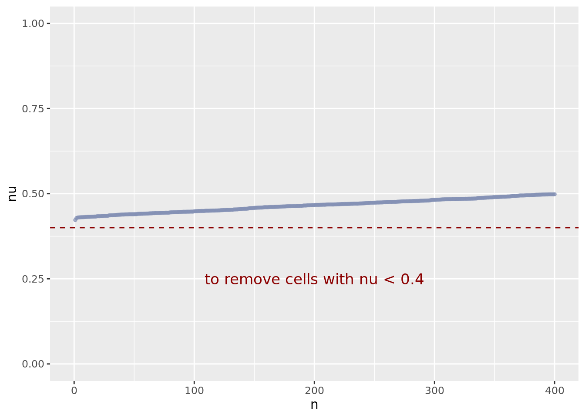
Final cleaning to check all is OK
fb150Obj <- clean(fb150Obj)
c(pcaCellsPlot, pcaCellsData, genesPlot, UDEPlot, nuPlot, zoomedNuPlot) %<-% cleanPlots(fb150Obj)
plot(pcaCellsPlot)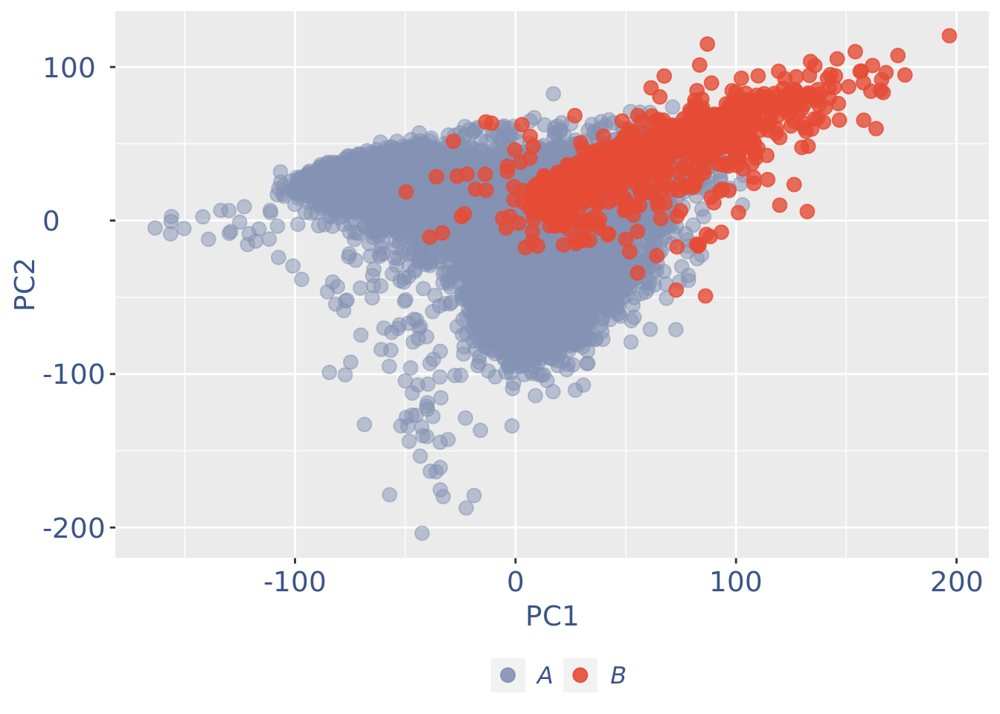
plot(genesPlot)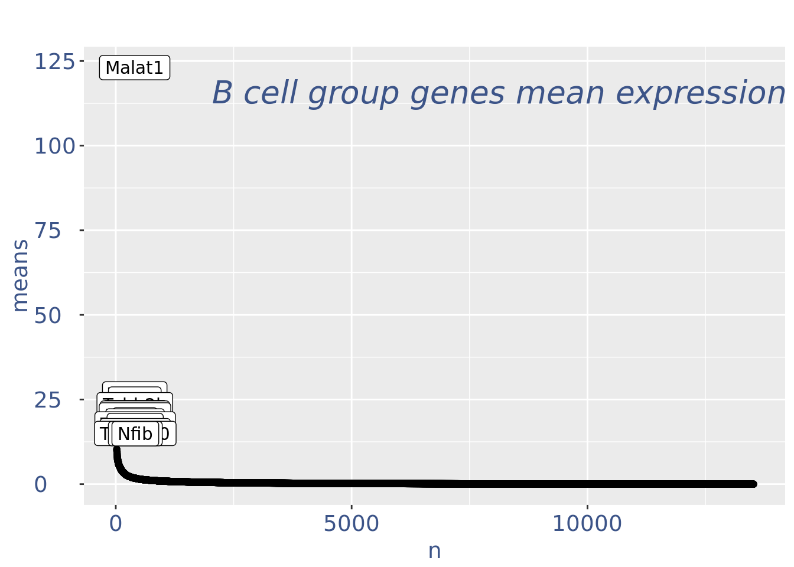
plot(UDEPlot)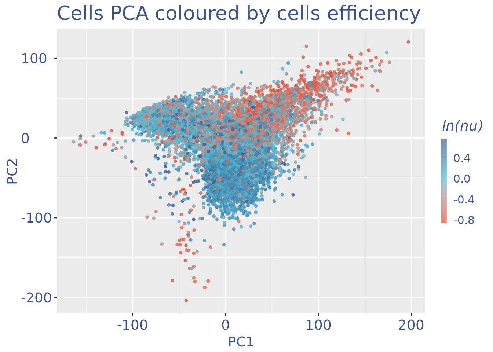
plot(nuPlot)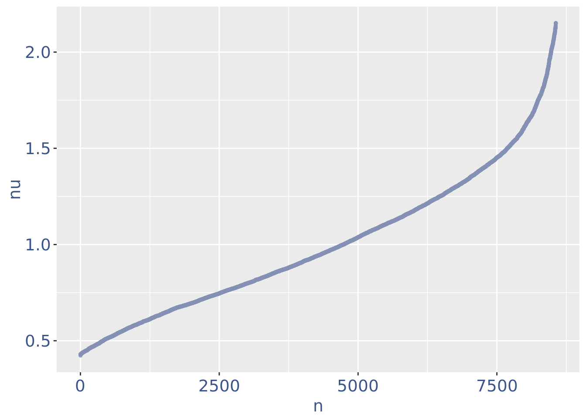
plot(cellSizePlot(fb150Obj, splitPattern = ":", numCol = 1))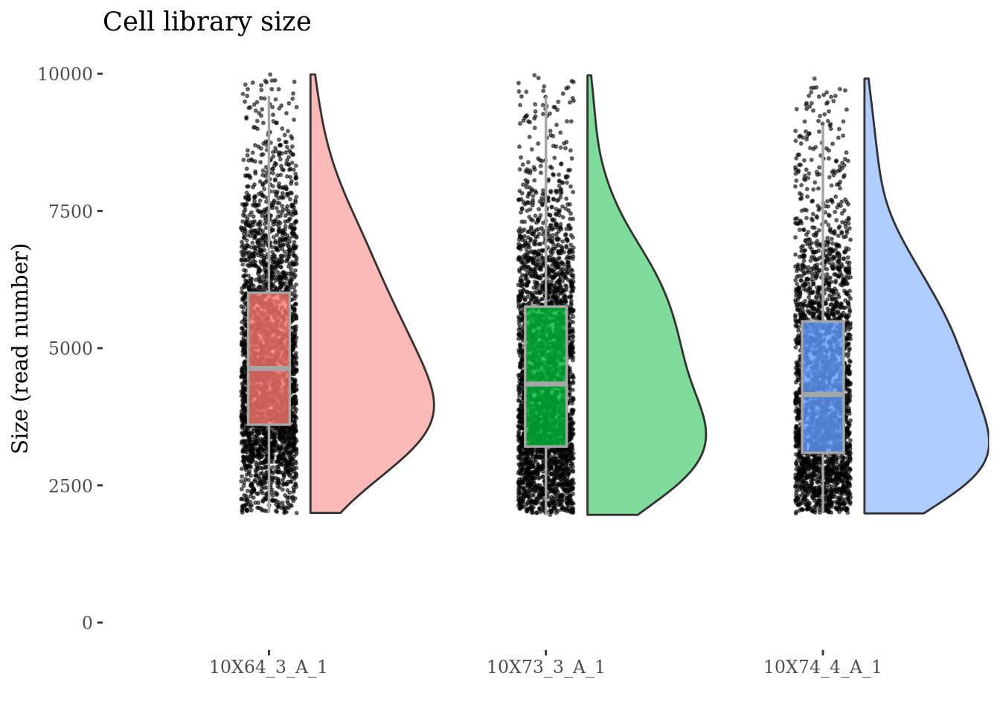
plot(genesSizePlot(fb150Obj, splitPattern = ":", numCol = 1))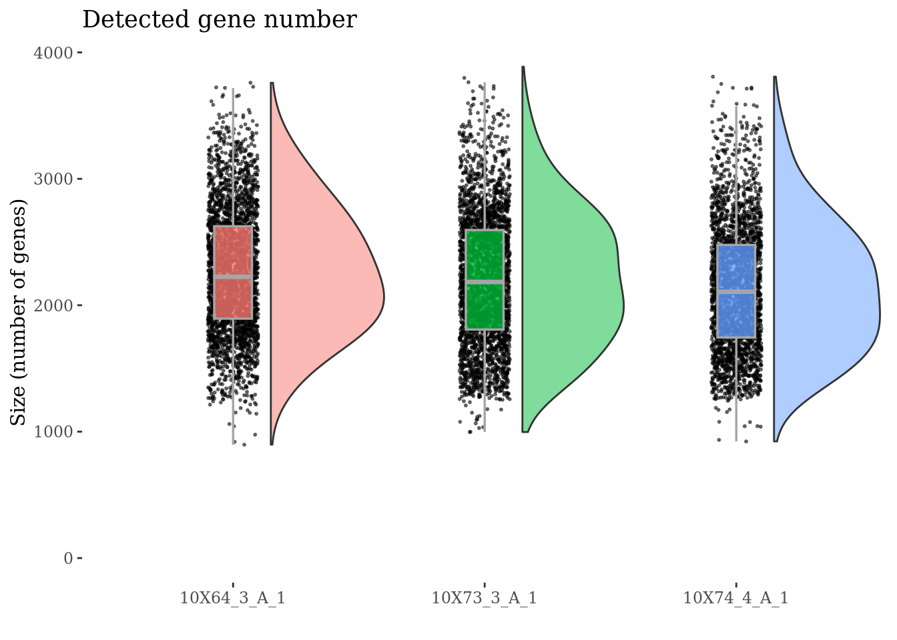
Calculate genes’ COEX
Sys.time()
fb150Obj <- proceedToCoex(fb150Obj, calcCoex = TRUE, cores = 12,
saveObj = TRUE, outDir = outDir)
Sys.time()Save the COTAN object
saveRDS(fb150Obj, file = file.path(outDir, paste0(sampleCondition, ".cotan.RDS")))fb150Obj <- readRDS(file = file.path(outDir, paste0(sampleCondition, ".cotan.RDS")))GDI
gdiData <- calculateGDI(fb150Obj)
genesToLabel <- head(rownames(gdiData[order(gdiData[["GDI"]],
decreasing = TRUE), ]), n = 10L)
genesToLabel [1] "Myt1l" "Aldoc" "Rbfox1" "Gas1" "Zfp36l1" "Mapt" "Ank3"
[8] "Stmn3" "Tubb3" "Pclaf" gdiPlot <- GDIPlot(fb150Obj, GDIIn = gdiData, GDIThreshold = 1.4,
genes = list("Top 10 GDI genes" = genesToLabel))
plot(gdiPlot)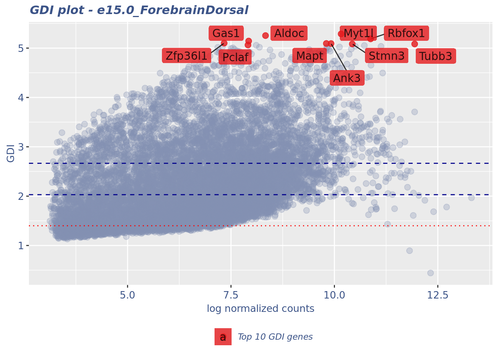
splitClusters <- cellsUniformClustering(fb150Obj, GDIThreshold = 1.4, cores = 13,
saveObj = TRUE, outDir = outDir)
c(splitCoexDF, splitPValueDF) %<-% DEAOnClusters(fb150Obj, clusters = splitClusters)
fb150Obj <- addClusterization(fb150Obj, clName = "split",
clusters = splitClusters,
coexDF = splitCoexDF, override = TRUE)
table(splitClusters)Consistent Transcript Cohorts (clustering)
c(mergedClusters, mergedCoexDF, mergedPValueDF) %<-%
mergeUniformCellsClusters(fb150Obj, clusters = splitClusters,
GDIThreshold = 1.4, cores = 13,
saveObj = TRUE, outDir = outDir)
fb150Obj <- addClusterization(fb150Obj, clName = "merge",
clusters = mergedClusters,
coexDF = mergedCoexDF,
override = TRUE)
table(mergedClusters)Sys.time()[1] "2023-11-17 12:57:25 CET"sessionInfo()R version 4.3.2 (2023-10-31)
Platform: x86_64-pc-linux-gnu (64-bit)
Running under: Ubuntu 20.04.6 LTS
Matrix products: default
BLAS: /usr/lib/x86_64-linux-gnu/blas/libblas.so.3.9.0
LAPACK: /usr/lib/x86_64-linux-gnu/lapack/liblapack.so.3.9.0
locale:
[1] LC_CTYPE=C.UTF-8 LC_NUMERIC=C LC_TIME=C.UTF-8
[4] LC_COLLATE=C.UTF-8 LC_MONETARY=C.UTF-8 LC_MESSAGES=C.UTF-8
[7] LC_PAPER=C.UTF-8 LC_NAME=C LC_ADDRESS=C
[10] LC_TELEPHONE=C LC_MEASUREMENT=C.UTF-8 LC_IDENTIFICATION=C
time zone: Europe/Rome
tzcode source: system (glibc)
attached base packages:
[1] stats graphics grDevices utils datasets methods base
other attached packages:
[1] COTAN_2.3.0 zeallot_0.1.0 tibble_3.2.1 ggplot2_3.4.2
loaded via a namespace (and not attached):
[1] RColorBrewer_1.1-3 rstudioapi_0.15.0
[3] jsonlite_1.8.7 shape_1.4.6
[5] umap_0.2.10.0 magrittr_2.0.3
[7] spatstat.utils_3.0-3 farver_2.1.1
[9] rmarkdown_2.24 GlobalOptions_0.1.2
[11] vctrs_0.6.3 ROCR_1.0-11
[13] spatstat.explore_3.2-1 DelayedMatrixStats_1.22.5
[15] askpass_1.2.0 htmltools_0.5.5
[17] S4Arrays_1.2.0 sctransform_0.4.1
[19] parallelly_1.36.0 KernSmooth_2.23-22
[21] htmlwidgets_1.6.2 ica_1.0-3
[23] plyr_1.8.8 plotly_4.10.2
[25] zoo_1.8-12 igraph_1.5.1
[27] mime_0.12 lifecycle_1.0.3
[29] iterators_1.0.14 pkgconfig_2.0.3
[31] rsvd_1.0.5 Matrix_1.6-2
[33] R6_2.5.1 fastmap_1.1.1
[35] MatrixGenerics_1.12.3 fitdistrplus_1.1-11
[37] future_1.33.0 shiny_1.7.5
[39] clue_0.3-64 digest_0.6.33
[41] colorspace_2.1-0 patchwork_1.1.2
[43] S4Vectors_0.38.1 tensor_1.5
[45] Seurat_5.0.0 dqrng_0.3.0
[47] RSpectra_0.16-1 irlba_2.3.5.1
[49] beachmat_2.16.0 labeling_0.4.2
[51] PCAtools_2.14.0 progressr_0.14.0
[53] RcppZiggurat_0.1.6 spatstat.sparse_3.0-2
[55] fansi_1.0.4 polyclip_1.10-4
[57] httr_1.4.6 abind_1.4-5
[59] compiler_4.3.2 withr_2.5.0
[61] doParallel_1.0.17 BiocParallel_1.34.2
[63] viridis_0.6.4 fastDummies_1.7.3
[65] dendextend_1.17.1 MASS_7.3-60
[67] openssl_2.1.0 DelayedArray_0.26.7
[69] rjson_0.2.21 tools_4.3.2
[71] lmtest_0.9-40 httpuv_1.6.11
[73] future.apply_1.11.0 goftest_1.2-3
[75] glue_1.6.2 nlme_3.1-163
[77] promises_1.2.0.1 grid_4.3.2
[79] Rtsne_0.16 cluster_2.1.4
[81] reshape2_1.4.4 generics_0.1.3
[83] spatstat.data_3.0-1 gtable_0.3.3
[85] tidyr_1.3.0 data.table_1.14.8
[87] BiocSingular_1.16.0 ScaledMatrix_1.8.1
[89] sp_2.1-1 utf8_1.2.3
[91] spatstat.geom_3.2-4 BiocGenerics_0.46.0
[93] RcppAnnoy_0.0.21 ggrepel_0.9.3
[95] RANN_2.6.1 foreach_1.5.2
[97] pillar_1.9.0 stringr_1.5.0
[99] spam_2.10-0 RcppHNSW_0.5.0
[101] later_1.3.1 circlize_0.4.15
[103] splines_4.3.2 dplyr_1.1.2
[105] lattice_0.22-5 deldir_1.0-9
[107] survival_3.5-7 tidyselect_1.2.0
[109] ComplexHeatmap_2.16.0 miniUI_0.1.1.1
[111] pbapply_1.7-2 knitr_1.43
[113] gridExtra_2.3 IRanges_2.34.1
[115] scattermore_1.2 stats4_4.3.2
[117] xfun_0.39 matrixStats_1.1.0
[119] stringi_1.8.1 lazyeval_0.2.2
[121] yaml_2.3.7 evaluate_0.21
[123] codetools_0.2-19 cli_3.6.1
[125] uwot_0.1.16 RcppParallel_5.1.7
[127] xtable_1.8-4 reticulate_1.34.0
[129] munsell_0.5.0 Rcpp_1.0.11
[131] spatstat.random_3.2-1 globals_0.16.2
[133] png_0.1-8 parallel_4.3.2
[135] Rfast_2.1.0 ellipsis_0.3.2
[137] assertthat_0.2.1 dotCall64_1.1-0
[139] parallelDist_0.2.6 sparseMatrixStats_1.12.2
[141] listenv_0.9.0 ggthemes_4.2.4
[143] viridisLite_0.4.2 scales_1.2.1
[145] ggridges_0.5.4 SeuratObject_5.0.0
[147] leiden_0.4.3 purrr_1.0.1
[149] crayon_1.5.2 GetoptLong_1.0.5
[151] rlang_1.1.1 cowplot_1.1.1